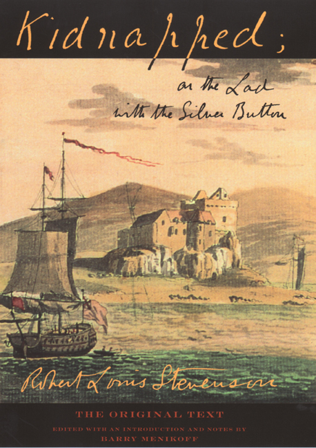

Kidnapped

Kidnapped is a historical fiction adventure novel by the Scottish author Robert Louis Stevenson. Written as a "boys' novel" and first published in the magazine Young Folks from May to July 1886, the novel has attracted the praise and admiration of writers as diverse as Henry James, Jorge Luis Borges, and Seamus Heaney. A sequel, Catriona, was published in 1893.
As historical fiction, it is set around 18th-century Scottish events, notably the "Appin Murder", which occurred near Ballachulish in 1752 in the aftermath of the Jacobite Rising. Many of the characters, and one of the principals, Alan Breck Stewart, were real people. The political situation of the time is portrayed from different viewpoints, and the Scottish Highlanders are treated sympathetically.
The central character and narrator is a young man named David Balfour, young and naive but resourceful, whose parents have recently died and who is out to make his way in the world. He is given a letter by the minister of Essendean, Mr. Campbell, to be delivered to the House of Shaws in Cramond, where David's uncle, Ebenezer Balfour, lives. On his journey, David asks many people where the House of Shaws is, and all of them speak of it darkly as a place of fear andevil.
When David arrives at the ominous House of Shaws, he soon finds out that he is the rightful heir of the estate. His uncle soon tries to set up an "accident" for David, and when it doesn't work, he sets up his own nephew's kidnapping. The story then follows the events relating to the escape of David Belfour, and his plan to retake his rightful estate.